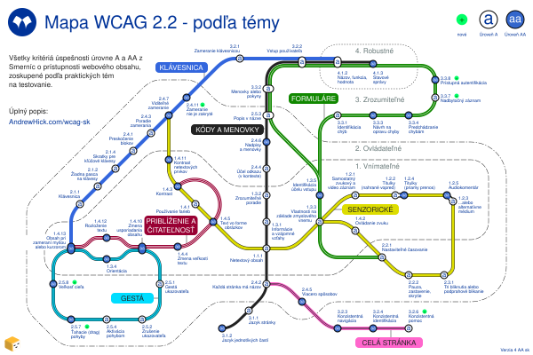
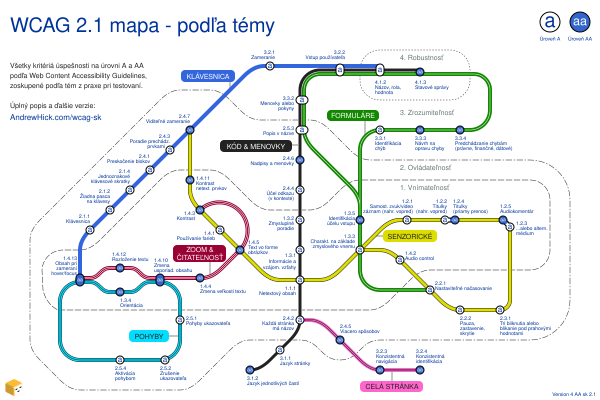

This is an extract of the Slovak WCAG map page published on AndrewHick.com/wcag-sk. Copy and paste the following code into the main page HTML files.
↓ START OF CODE TO COPY ↓
Mapa WCAG 2.2 - podľa témy
Tento diagram zoskupuje všetky kritériá úspešnosti zo smerníc pre prístupnosť webového obsahu (WCAG) podľa témy, vo verzii 2.2, úrovne A a AA.
Ukazuje praktické súvislosti medzi jednotlivými kritériami, ktoré nemusia byť zrejmé z názvov smerníc. Napríklad všetky kritériá, ktoré možno testovať pomocou klávesnice, sú v jednom riadku. Štruktúra je z veľkej časti založená na rozhodovacom strome WCAG (WCAG decision tree), ktorý podrobnejšie opisuje spôsob testovania jednotlivých kritérií.
Mapa

{kind=link}
Verzia WCAG 2.1
Ďakujem veľmi pekne Iva Hevesiová za preklad do slovenčiny!

Popis
Mapa smerníc pre prístupnosť webového obsahu pripomínajúca mapu vlakov metra. Mapa pripomína mapu vlaku metra a zobrazuje 55 kritérií úspešnosti ako stanice na 7 tratiach.
Každá značka stanice ukazuje, či je kritérium na úrovni A alebo AA. 4 princípy WCAG sú znázornené ako zóny pohybujúce sa smerom von od stredu pomocou tenkých sivých čiar:
- 1.x.x - Vnímateľné (sú najbližšie k stredu)
- 2.x.x - Ovládateľné
- 3.x.x - Zrozumiteľné
- 4.x.x - Robustné (sú najviac vzdialené od stredu)
Každá línia je podrobne opísaná v nasledujúcich častiach. Niektoré názvy kritérií sú mierne zjednodušené.
Klávesnica
Tieto kritériá zabezpečujú predvídateľné fungovanie funkcií s klávesnicou, ktoré majú viditeľné stavy zamerania.
Línia je plná modrá. Vedie od západu na sever.
| Počet | Kritérium úspešnosti | Úroveň | Výmeny |
|---|---|---|---|
| 1.4.13 | Obsah pri zameraní myšou alebo kurzorom | AA | |
| 2.1.1 | Klávesnica | A | žiadne |
| 2.1.2 | Žiadna pasca na klávesy | A | žiadne |
| 2.1.4 | Skratky pre kľúčové klávesy | A | žiadne |
| 2.4.1 | Preskočenie blokov | A | žiadne |
| 2.4.3 | Poradie zamerania | A | žiadne |
| 2.4.7 | Viditeľné zameranie | AA | |
| 2.4.11 | Zameranie nie je zakryté nové | AA | žiadne |
| 3.2.1 | Zameranie klávesnicou | A | žiadne |
| 3.2.2 | Vstup používateľa | A | |
| 4.1.2 | Názov, funkcia, hodnota | A |
Priblíženie a čitateľnosť
Tieto kritériá zabezpečujú, že text je:
- čitateľný pri zväčšení alebo oddialení
- uložený ako text, a nie len ako obrázok
- ovládateľný, keď sa zobrazí po nabehnutí alebo zaostrení
Línia je tmavočervená s dvoma vnútornými bielymi čiarami. Vedie na západ od centra.
| Počet | Kritérium úspešnosti | Úroveň | Výmeny |
|---|---|---|---|
| 1.4.3 | Kontrast | AA | |
| 1.4.5 | Text vo forme obrázkov | AA | |
| 1.4.4 | Zmena veľkosti textu | AA | žiadne |
| 1.4.10 | Zmena usporiadania obsahu | AA | |
| 1.4.12 | Rozloženie textu | AA | žiadne |
| 1.4.13 | Obsah pri zameraní myšou alebo kurzorom | AA |
Senzorické
Tieto kritériá zabraňujú tomu, aby bol obsah závislý na konkrétnych zmysloch, a to tým, že:
- dostatočný kontrast
- nespolieha sa na zrak, farbu, sluch alebo načasovanie
- vyhýba sa zvukovým alebo obrazovým rušivým vplyvom
Línia je žltá s čiernym okrajom. Prevažne vedie od severozápadu na východ, pričom sa vracia späť od Zmyslových charakteristík.
| Počet | Kritérium úspešnosti | Úroveň | Výmeny |
|---|---|---|---|
| 2.4.7 | Viditeľné zameranie | AA | |
| 1.4.11 | Kontrast netextových prvkov | AA | žiadne |
| 1.4.3 | Kontrast | AA | |
| 1.4.1 | Používanie farieb | A | žiadne |
| 1.4.5 | Text vo forme obrázkov | AA | |
| 1.1.1 | Netextový obsah | A | |
| 1.3.3 | Vlastnosti na základe zmyslového vnemu | A | |
| 1.2.1 | Samostatný zvukový a video záznam | A | žiadne |
| 1.2.2 | Titulky (nahrané vopred) | A | žiadne |
| 1.2.4 | Titulky (priamy prenos) | AA | žiadne |
| 1.2.5 | Audiokomentár | AA | žiadne |
| 1.2.3 | Audiokomentár | A | žiadne |
| 1.4.2 | Ovládanie zvuku | A | žiadne |
| 2.2.1 | Nastaviteľné časovanie | A | |
| 2.2.2 | Pauza, zastavenie, skrytie | A | žiadne |
| 2.3.1 | Tri bliknutia alebo podprahové blikanie | A | žiadne |
Kódy a menovky
Vďaka týmto kritériám je obsah kompatibilný s asistenčnou technológiou, pretože:
- kódovaný v súlade s tým, ako vyzerá vizuálne
- vhodne označený
Formuláre majú ďalší súbor kritérií.
Línia je čierna s bielym okrajom. Vedie prevažne z juhu na sever.
| Počet | Kritérium úspešnosti | Úroveň | Výmeny |
|---|---|---|---|
| 3.1.2 | Jazyk jednotlivých častí | AA | žiadne |
| 3.1.1 | Jazyk stránky | A | žiadne |
| 2.4.2 | Každá stránka má názov | A | |
| 1.1.1 | Netextový obsah | A | |
| 1.3.1 | Informácie a vzájomné vzťahy | A | žiadne |
| 1.3.2 | Zrozumiteľné poradie | A | žiadne |
| 2.4.4 | Účel odkazu (v kontexte) | A | žiadne |
| 2.4.6 | Nadpisy a menovky | AA | žiadne |
| 2.5.3 | Popis v názve | A | |
| 3.3.2 | Menovky alebo pokyny | A | |
| 3.2.2 | Vstup používateľa | A | |
| 4.1.2 | Názov, funkcia, hodnota | A | |
| 4.1.3 | Stavové správy | AA |
Formuláre
Tieto kritériá pomáhajú zabezpečiť použiteľné formuláre, ktoré:
- sa nespoliehajú na časové alebo zmyslové pokyny
- majú vhodné pokyny a chybové hlásenia
- sú interaktívne s asistenčnou technológiou
- sú jednoduché na prihlásenie a dokončenie
Línia je zelená s jednou vnútornou bielou čiarou. Vedie najmä z východu od centra na sever. Od identifikácie účelu vstupu sa vracia späť.
| Počet | Kritérium úspešnosti | Úroveň | Výmeny |
|---|---|---|---|
| 2.2.1 | Nastaviteľné časovanie | A | |
| 1.3.3 | Vlastnosti na základe zmyslového vnemu | A | |
| 1.3.5 | Identifikácia účelu vstupu | AA | žiadne |
| 2.5.3 | Popis v názve | A | |
| 3.3.2 | Menovky alebo pokyny | A | |
| 3.2.2 | Vstup používateľa | A | |
| 4.1.2 | Názov, funkcia, hodnota | A | |
| 4.1.3 | Stavové správy | AA | |
| 3.3.1 | Identifikácia chýb | A | žiadne |
| 3.3.3 | Návrh na opravu chyby | AA | žiadne |
| 3.3.4 | Predchádzanie chybám | AA | žiadne |
| 3.3.7 | Nadbytočný záznam nové | A | žiadne |
| 3.3.8 | Prístupná autentifikácia nové | AA | žiadne |
Gestá
Tieto kritériá zabezpečujú funkčnosť:
- nespolieha sa na gestá, ťahanie alebo pohyb
- funguje na malých obrazovkách na výšku aj na šírku
- znižuje riziko aktivácie nežiaducej akcie
Línia je azúrová s čiernym okrajom a čiernou vnútornou čiarou. Vedie v slučke na juhozápade.
| Počet | Kritérium úspešnosti | Úroveň | Výmeny |
|---|---|---|---|
| 1.4.13 | Obsah pri zameraní myšou alebo kurzorom | AA | |
| 1.3.4 | Orientácia | AA | žiadne |
| 1.4.10 | Zmena usporiadania obsahu | AA | |
| 2.5.1 | Gestá ukazovateľa | A | žiadne |
| 2.5.2 | Zrušenie ukazovateľa | A | žiadne |
| 2.5.4 | Aktivácia pohybom | A | žiadne |
| 2.5.7 | Ťahacie (drag) pohyby nové | AA | žiadne |
| 2.5.8 | Veľkosť cieľa nové | AA | žiadne |
Celá stránka
Tieto kritériá je potrebné otestovať na celej webovej lokalite, aby sa zabezpečilo, že:
- názvy, ponuky a pomocné mechanizmy sa zobrazujú konzistentne
- stránky majú zmysluplné názvy
- na každú stránku je možné pristupovať viac ako jedným spôsobom
Línia je ružová s dvoma vnútornými čiernymi čiarami. Vedie z juhu na juhovýchod.
| Počet | Kritérium úspešnosti | Úroveň | Výmeny |
|---|---|---|---|
| 2.4.2 | Každá stránka má názov | A | |
| 2.4.5 | Viacero spôsobov | AA | žiadne |
| 3.2.3 | Konzistentná navigácia | AA | žiadne |
| 3.2.4 | Konzistentná identifikácia | AA | žiadne |
| 3.2.6 | Konzistentná pomoc nové | A | žiadne |
Alternatívy a poďakovanie
Ďakujem veľmi pekne:
za preklad do slovenčiny!
Ďalšie verzie a poďakovania nájdete na stránke mapy AA v angličtine.
Licencia
Ďakujeme za návštevu! Toto dielo je licencované pod Creative Commons: CC BY-NC 4.0


Budem rád, ak ktokoľvek použije alebo upraví túto mapu, ale prosím:
- pridajte kredit s odkazom na úplný prístupný popis na AndrewHick.com/wcag-sk
- zdieľajte alebo upravte ho tak, aby bol prístupný (napríklad pridajte alternatívny text k obrázkom)
- požiadajte ma o povolenie pred komerčným použitím
↑ END OF CODE TO COPY ↑